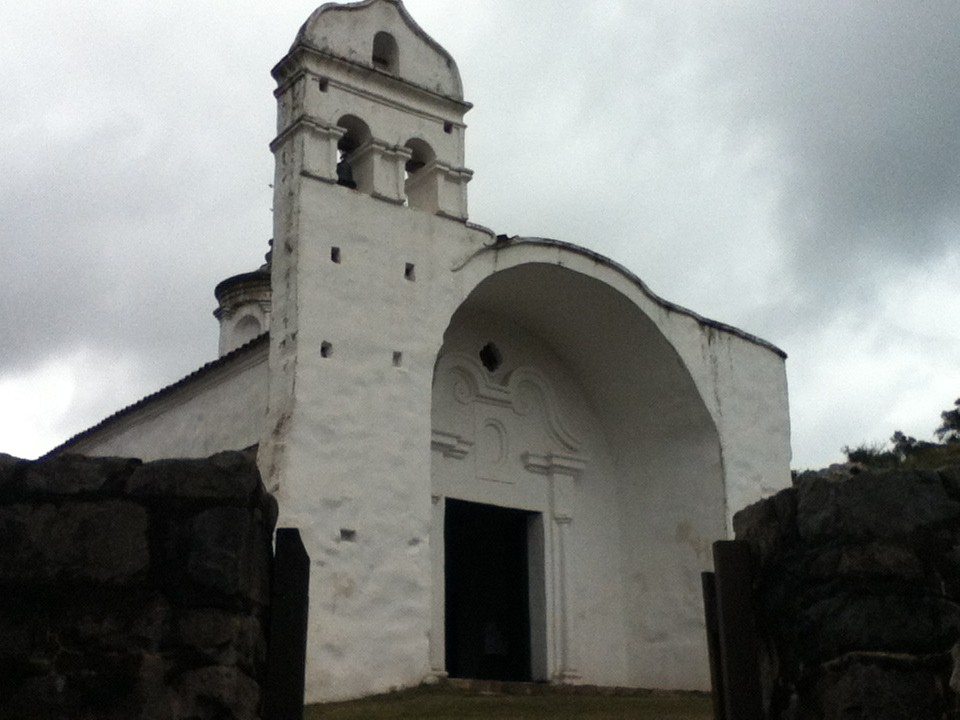

Circuitos
Travesía a Candonga

Es la región de las capillas y estancias jesuíticas, del excelente clima mediterráneo, del WRC World rally car, del Río Pinto y del mountain bike en Córdoba. En esta travesía disfrutamos del descenso del mirador de Cuchi Corral a San Marcos Sierras, de un primer cruce de las Sierras Chicas entre La Cumbre y Candonga y de un segundo cruce desde La Falda a Río Ceballos. Enfrentamos ascensos exigentes, descensos muy divertidos, para traer a casa los recuerdos de un excelente fin de semana largo de mountain bike en Córdoba. La hotelería es de excelente nivel, para garantizar un excelente descanso.
Haga click en este enlace para ver la ruta en Wikiloc.
Puentes Colgantes
Camino de los Puentes Colgantes, a un tramo (apenas 30 km aproximadamente) de la RP 14 , entre el paraje Copina y el parador El Cóndor, que une al Valle de Traslasierra con la ciudad de Villa Carlos Paz, en el Valle de Punilla.
Haga click en este enlace para ver la ruta en Wikiloc.
Perilago La Calera
Este recorrido comienza en la ciudad de La Calera, Cordoba y avanza hacia el paredon del dique San Roque luego hacia Bialet Masse y hacia Carlos Paz por el lado Oeste del Lago San Roque para luevo volver a Calera por Ruta 20 y el rural La Calera.
Haga click en este enlace para ver la ruta en Wikiloc.
Camino de los Artesanos
La Cumbre por la rp38 pasando por Huerta Grande, una vez en La Cumbre, voviendo por el camino de los Artesanos hasta Villa Giardino y de alli por caminos de ripio hasta La Falda, saliendo detras del Hotel Eden, atravesando la ciudad y volviendo al hotel por Valle Hermoso.
Haga click en este enlace para ver la ruta en Wikiloc.